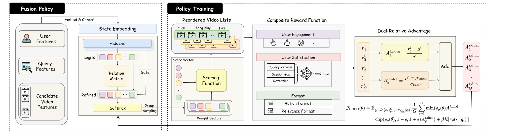
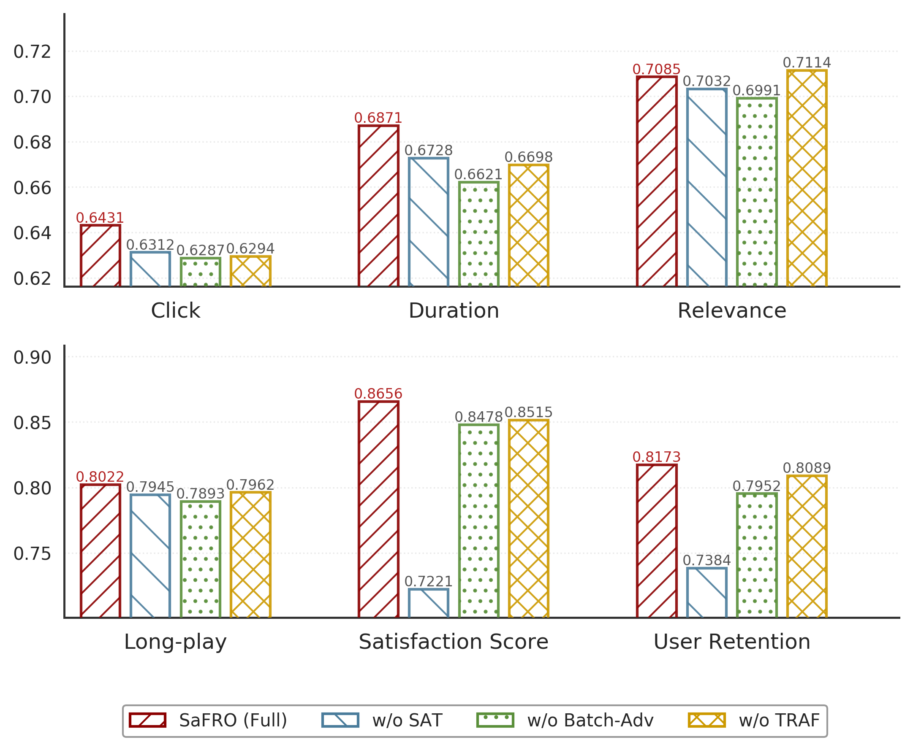
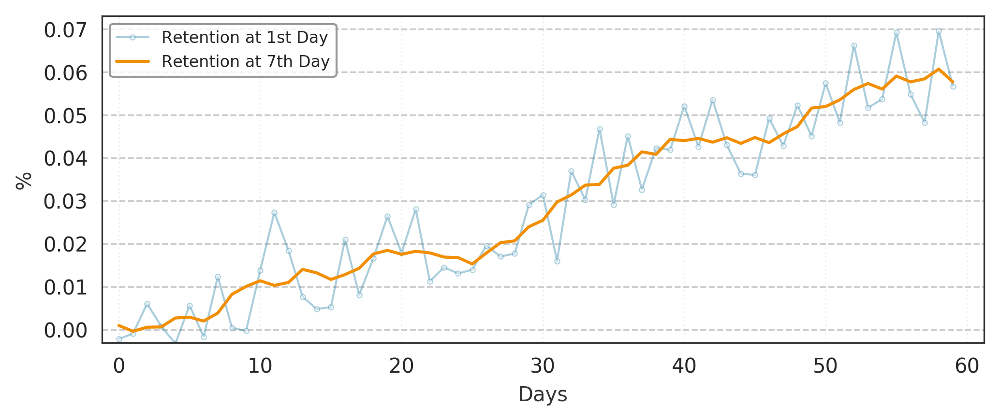

目录 · 9 节
1它到底在解决什么问题？2整体框架：三块各管什么3满意度奖励：改搜、间隔和留存怎么合成一个分数4DRPO：给每个 query 的优势值整体加一个偏移5TRAF：让各目标的权重互相参考6实验：哪些结论站得住7我认为它的局限8一个推荐/搜索团队可以怎么试9一句话结论和评价分享 SHARE
做搜索或推荐排序里多目标融合的人值得读，尤其是想把留存这类长期目标接进融合权重的团队。但要带着一个问题读：离线的满意度提升，有一大半是用自己的奖励模型给自己打分。论文要解决的是，短视频搜索的融合权重一直按点击、长播这些即时反馈来调，和用户是否真的满意对不上。核心思想一句话：用户看完结果后有没有马上改搜、隔多久再来搜、第二天还搜不搜，这三个信号合成一个满意度奖励，再用一种改造过的 GRPO 去学每个请求该用哪组融合权重。在快手 10% 搜索流量上跑了两个月，改搜率降了 0.319%，观看时长涨了 0.611%，次日留存相对基线的差距从 0 一路涨到约 0.06%。我认为满意度奖励的构造值得借鉴，但算法上的“双重相对优势”收益需要打折看。
它到底在解决什么问题？
先说多任务融合（MTF，Multi-Task Fusion）。排序模型通常先做多任务学习（MTL），同时预测点击率、长播率、观看时长、相关性等几个分数；MTF 再把这几个分数合成一个最终分，决定排序。论文沿用的融合公式是加权求和：
是第 个视频在第 个目标上的预测分，取对数是为了压平各目标的量纲差异； 是融合权重，要求加起来等于 1，并且每个都有上下界，避免某个目标被完全压掉。一个请求里所有候选视频共用同一组权重，但不同用户、不同 query 可以用不同的权重。所以要学的是一个策略：看到用户和 query，输出一组权重。
用一个示意场景说明两种权重的差别：用户搜“红烧肉做法”，候选里有一个 15 秒的爆款短视频和一个 8 分钟的完整教程。点击率权重高时，爆款排第一，用户点了、看完了，却没学会，于是改搜“红烧肉详细步骤”。观看时长权重高时，教程排第一，用户看完就走了，第二天又来搜别的菜。只看即时点击，前一种更好；看用户满不满意，后一种更好。
为什么不直接搬推荐里用强化学习（RL）调融合权重的做法？作者给了两个原因。一是搜索有明确意图和相关性约束，不能为了探索随便换内容。二是数据稀疏：在快手，搜索的正反馈密度约为推荐信息流的十分之一，搜索行为序列的长度短两个数量级。这说明搜索里很难把长期留存归因到某一次排序上，需要更贴近单次请求的满意度信号。
整体框架：三块各管什么

| 模块 | 输入 | 输出 | 解决什么 |
|---|---|---|---|
| 满意度奖励模型 | query、用户特征和排出的列表 | 0 到 1 的满意度分 | 把稀疏的长期信号变成每个请求都有的奖励 |
| DRPO（双重相对策略优化） | 一个 batch 里多个 query、每个 query 采样的多组权重 | 策略梯度 | 在稀疏反馈下稳定更新策略 |
| TRAF（任务关系感知融合） | 策略网络的隐层和各目标的 logits | 修正后的权重 | 让各目标的权重互相参考，而不是各自独立输出 |
策略网络很小，参数量 0.91M，线上推理 4.5 毫秒。下面按这三块拆开讲。
满意度奖励：改搜、间隔和留存怎么合成一个分数
作者从搜索日志里找了两个 query 级别的信号。一是改搜：看完当前结果后，用户马上发了一个语义相关的新 query，多半说明没找到想要的。二是会话间隔：当前 query 到用户下一次 query 的时间。间隔越短，通常说明用户越投入。论文图 3 显示，留存用户的改搜率更低、间隔更短。
间隔不能直接用，因为它和用户活跃度强相关：重度用户天然间隔短。作者先用每个用户自己历史间隔的 60% 分位数做归一化，得到 ，再做指数衰减。最终的满意度奖励是：
表示是否改搜， 表示第二天是否还搜索， 是控制衰减速度的温度，。前面那个乘数的意思是：只要改搜了，这次请求的满意度直接记 0。
手算一下（示意，取 ）。用户这次的间隔正好等于他自己的 60% 分位数，，；第二天他还来搜，满意度是 。同一个用户如果间隔是平时的 3 倍，，第二天也没来，满意度只有约 0.02。如果他看完马上改搜，不管后面怎样都是 0。
这些信号只在日志里事后才有，排序时拿不到，所以作者训练了一个列表级的奖励模型 ：输入 query 和排出的列表，预测这个列表会得到的满意度。训练目标是对这个满意度标签做回归。
的选择方式值得一提。作者把 从 0 扫到 1，算 分别和归一化间隔、留存的相关系数，两者相加在 时最高，约 1.45。这个标准天然偏向两边各占一半，因为 本来就是这两项的加权和。它能说明 0.5 不是拍脑袋定的，但说明不了 0.5 对线上留存最好。
DRPO：给每个 query 的优势值整体加一个偏移
先交代动作是什么。作者把每个权重的上下界区间切成若干档，所有档位的组合里，只保留权重和与 1 的偏差在容差内的那些，策略就是在这个可行组合集合上的一个类别分布。这和后文任务关系模块那一节“各目标 logit 经 softmax 得到权重”的说法前后不一致；一种合理的读法是网络的输出决定各个可行组合的概率，再从中采样，这是我的理解。GRPO 的做法是：对一个 query 从这个分布里采样 G 组权重，各排一个列表，算出奖励，再在组内减均值、除标准差得到优势值。作者认为只做组内比较有个问题：如果一个 query 本身就难，所有权重排出来都很差，组内最好的那组也会拿到正优势，被当成好动作强化。
DRPO（双重相对策略优化）的改法是再加一项“batch 内相对”的优势：
和 是第 个 query 组内奖励的均值和标准差， 和 是整个 batch 里各组均值的均值和标准差。第二项对同一个 query 的所有动作都一样。
手算一个示意：batch 里两个 query，各采样 3 组权重。A 是好 query，奖励 0.9、0.8、0.7；B 是难 query，奖励 0.4、0.3、0.2。两组的组内优势都是约 +1.22、0、−1.22。各组均值是 0.8 和 0.3，batch 均值 0.55，标准差 0.25，所以第二项 A 是 +1，B 是 −1。合起来，A 的三组是 +2.22、+1、−0.22，B 的三组是 +0.22、−1、−2.22。B 里最好的那组从 +1.22 降到只有 +0.22。
作者自己也证明了，加这一项不改变同一 query 内两组权重的优势差，只改变整个 query 的梯度大小。我想补一个角度：在策略梯度里，给同一状态的所有动作加同一个常数，相当于换了基线，期望梯度不变。这意味着第二项在期望上不提供新的方向信息，它实际起作用的是有限样本下的效果：好 query 上采样到的动作都被推高，策略变得更集中；难 query 上采样到的动作都被压低，概率流向没采样到的动作，相当于继续探索。所以 DRPO 更像是按 query 难度调节探索，而难不难很大程度取决于 query 本身，比如意图模糊的 query 换什么权重都难有高奖励，策略在这类 query 上会一直被推着探索。
组合奖励是三部分直接相加：即时参与奖励、满意度奖励、格式约束。即时参与奖励是一个 NDCG 式的排序分：用户点击过、长播过的视频排得越靠前，这一项越高。格式约束有两条：权重和偏离 1 超过容差扣 1 分；前 k 位里有相关性低于阈值的视频扣 2 分。后一条把搜索的相关性要求写成了硬性惩罚，这是搜索和推荐场景的一个实际区别。
TRAF：让各目标的权重互相参考
以往做法是策略网络直接给每个目标各输出一个 logit。TRAF（任务关系感知融合）把隐层投影成每个目标一个向量，两两做内积得到任务之间的关系分，再用下式修正每个目标的 logit：
是目标 原来的 logit， 是目标 和 的关系分， 是目标 自己的门控系数。第一项保留自己原来的 logit，第二项按关系分把所有目标的 logit 加权求和。修正后的 再经 softmax 得到权重。直观上，长播率权重升高时，时长权重往往也该跟着调，TRAF 让网络显式学这种联动。它只增加了 0.04M 参数，推理多 0.2 毫秒。
实验：哪些结论站得住
离线数据来自快手搜索，4 亿用户、8.06 亿视频、21.5 亿个会话，按 9:1 切分。指标有两类：四个目标各自的 NDCG@10，以及满意度分和留存率。主结果节选如下（论文表 1）：
| 方法 | 类型 | NDCG 平均 | 满意度分 | 留存 |
|---|---|---|---|---|
| LambdaRank | 排序学习 | 0.6743 | 0.7421 | 0.7112 |
| CEM | 黑盒搜索权重 | 0.6454 | 0.7206 | 0.6824 |
| DDPG | 通用 RL | 0.6884 | 0.8132 | 0.7356 |
| SAC | 通用 RL | 0.7004 | 0.8343 | 0.7865 |
| AURO | 面向留存的 RL | 0.7040 | 0.8467 | 0.8026 |
| SaFRO | 本文 | 0.7102 | 0.8656 | 0.8173 |
先看能信的部分。NDCG 平均比最强的 AURO（一种面向留存优化的 RL 方法）高 0.0062，相对约 0.9%，四个目标都是 SaFRO 最高，这是用真实日志算的，比较可靠。
再看要打折的部分。满意度分是用 SaFRO 训练时当奖励的那个满意度模型打的，留存是用同一份数据训的模拟器预测的。这意味着离线的满意度和留存指标，衡量的是“各方法离这个奖励模型的偏好有多近”，SaFRO 直接优化这个模型，占优是意料之中的。消融结果把这一点暴露得很清楚：

| 变体 | 点击 NDCG | 时长 NDCG | 相关性 NDCG | 满意度分 | 留存 |
|---|---|---|---|---|---|
| SaFRO 完整版 | 0.6431 | 0.6871 | 0.7085 | 0.8656 | 0.8173 |
| 去掉满意度奖励 | 0.6312 | 0.6728 | 0.7032 | 0.7221 | 0.7384 |
| 去掉 batch 内相对优势 | 0.6287 | 0.6621 | 0.6991 | 0.8478 | 0.7952 |
| 去掉 TRAF | 0.6294 | 0.6698 | 0.7114 | 0.8515 | 0.8089 |
去掉满意度奖励，满意度分掉了 0.14，而 NDCG 只掉 0.01 左右，因为满意度分本来就是这个奖励模型打的。去掉 batch 内相对优势，各项都降了，但按上一节的分析它在期望上不改变梯度方向，论文又只报告了单次运行，这个差距有多少来自随机波动不好判断。去掉 TRAF 反而让相关性 NDCG 从 0.7085 升到 0.7114，说明 TRAF 的联动在用一点相关性换其他目标。
超参数实验里，组大小 从 2 加到 32，满意度分从 0.7912 涨到 0.8656，说明组内候选越多，比较越有效；但 NDCG 在 时最高，到 32 反而略降。熵系数 的影响呈倒 U 形：NDCG、满意度分和留存三项都在 时最高， 时留存掉到 0.7425。
线上实验最有说服力。10% 搜索流量跑两个月，对照组是一个按即时参与度优化的 DDPG（一种 Actor-Critic 强化学习算法）融合策略：
| 指标 | 改搜率（越低越好） | 点击率 | 长播率 | 观看时长 |
|---|---|---|---|---|
| SaFRO 相对基线 | −0.319% | +0.136% | +0.495% | +0.611% |

改搜率是奖励里直接惩罚的信号，它下降说明线上确实少了“没找到”的情况。留存差距随时间持续扩大而不是一上线就跳变，这和“满意度会累积成留存”的说法一致。
我认为它的局限
第一，离线评估是循环的。满意度分来自训练用的奖励模型，留存来自模拟器，两者都和 SaFRO 的优化目标高度重合。真正独立的证据只有 NDCG 和线上 A/B，而 NDCG 的领先只有约 0.9%。
第二，线上对照组偏弱。基线是按即时参与度优化的 DDPG，离线表里它比 AURO、RLUR（另一种面向留存的 RL 方法）都差不少，留存 0.7356 对 0.8026。线上没有和这类同样优化留存的方法比，所以分不清收益来自“加了满意度奖励”还是“来自 DRPO 和 TRAF”。图 8 的纵轴单位是百分比，约 0.06% 的留存差距放在 4 亿日活上不算小，但绝对幅度确实很小。
第三，batch 内相对优势的理论依据偏弱。如上一节所说，给同一 query 的所有动作加同一个常数不改变期望梯度。消融里它带来的约 0.02 留存提升只有一次运行，也没有换随机种子的方差。此外，会话间隔越短越好这个假设，在搜索里不总成立：快速发起一个无关的新 query 不算改搜，也会被当成满意。
一个推荐/搜索团队可以怎么试
- 先只做满意度奖励。把“改搜记 0、间隔按用户自身分位数归一化、次日是否回访”合成一个 query 级标签，看它和长期留存的相关性在自家数据上是否成立，再决定要不要训奖励模型。
- 离线评估时，满意度类指标用另一份独立数据或另一个模型来打，不要用训练奖励的那个模型，否则所有方法的比较都会偏向直接优化它的那个。
- 想试 DRPO 的 batch 项，先和纯 GRPO 各跑 3 到 5 个随机种子，比较均值和方差，再看收益是否显著。
- 线上对照组选当前最强的融合策略，至少跑满一个月，按天看留存差距的曲线，而不只看最后一天。
一句话结论和评价
这篇最值得借鉴的是：把“有没有马上改搜”当作满意度的一票否决，再用用户自身节奏归一化的间隔和次日回访补充，搜索里也能造出每个请求都有的长期奖励。
| 维度 | 评价 |
|---|---|
| 问题重要性 | 高。融合权重直接决定排序，搜索里长期满意度一直缺少可优化的信号 |
| 方法创新性 | 中。满意度奖励的构造有新意；DRPO 的 batch 项和 TRAF 都是小改动 |
| 实验证据 | 中。线上两个月 A/B 可信，但离线满意度和留存是自评，对照组偏弱 |
| 工程成本 | 低。策略网络 0.91M 参数，推理 4.5 毫秒，主要成本在维护奖励模型 |
| 是否值得尝试 | 值得试满意度奖励；DRPO 的 batch 项先做多种子对照再决定 |
| 适用场景 | 短视频和内容搜索的多目标融合，以及其他有明确意图、反馈稀疏的排序场景 |
读完这篇，你觉得
夜读鸮记下了，谢谢你的反馈。
点一下即可，无需登录；再点一次撤回。只统计匿名次数，不记录你是谁。
讨论
欢迎补充实验细节、复现经验或不同看法。需 GitHub 登录。
正在加载讨论…